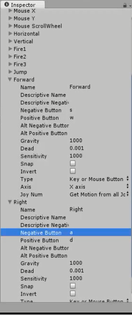

Input Manager no Unity 3D
Para criar mais duas entradas no Input
Edit – Project Settings – Input
Mudar Size para 17, criando duas novas entradas
Alterar as duas últimas assim (Forward e Right):

Apenas mudando Negative Button e Positive Button em ambas para s e w e a e d
Usando:
float forward = Input.GetAxis(“Forward”);
float right = Input.GetAxis(“Right”);
movement = new Vector3(movement.x + right, movement.y, movement.z + forward);
tranfrorm.Translate(movement * Time.deltaTime * movementVelocity, Space.World);